Filternde Abscheider haben die größte Verbreitung und nehmen an Bedeutung weiter zu, weil mit modernen Filtermedien und Abreinigungssystemen durchweg Abscheidegrade über 99 % bzw. von der Staubbeladung nahezu unabhängige Reststaubgehalte weit unter 1 mg/m³ erreicht werden können. Nach der Aufgabenstellung unterscheidet man:
Das Filtermedium ist das Kernstück des filternden Abscheiders. Bei der Auswahl der geeigneten Faser ist häufig ein Kompromiss zu schließen, da es keine Faser gibt, die nicht irgendwelche chemischen, physikalischen oder kommerziellen Nachteile aufweist. Den größten Anteil an heute eingesetzten Filtermedien hat die Polyester-Faser (PES), die sich im Bereich trockener Rohgase bis ca. 150 °C bewährt hat. Die Fasern werden überwiegend zu dreidimensionalen Nadelfilzen oder Faservliesen verarbeitet, die den Staub sowohl auf der Oberfläche, als auch in der Tiefe des Mediums speichern können. Als Weiterentwicklung für eine bessere Abreinigbarkeit werden diese häufig mit einer Beschichtung der rohgasseitigen Oberfläche, z. B. durch eine Teflon-Membrane, versehen.
Diese textilen Medien werden zu Filterschläuchen und Filtertaschen konfektioniert. Dabei wird das flexible Filtermedium auf Stützkörbe oder -rahmen aufgezogen in den Abscheider eingebaut. Zunehmend werden auch starre, selbsttragende Filterelemente eingesetzt, die als sternförmige Filterpatronen, rautenförmige Kompaktfilterelemente oder lamellenförmige Sinterlamellenfilter eine möglichst große Filterfläche auf kleinstem Raum ermöglichen sollen.
Das mit Abstand verbreitetste Verfahren ist die so genannte Druckluftimpulsabreinigung, bei der die Filterelemente zeitabhängig oder differenzdruckgeregelt durch ventilgesteuerte Luftimpulse von 2 bis 7 bar Druck in der dem Luftstrom entgegengesetzten Richtung abgereinigt werden. In Verbindung mit einem geeigneten Filtermedium können damit auch zum Anbacken neigende Partikel abgereinigt werden. Große Filteranlagen werden alternativ dazu auch mit einer materialschonenderen Mitteldruck-Spülluftabreinigung mittels verfahrendem Spülventilator ausgestattet.
Bei den Abreinigungsverfahren hat die rein mechanische Abreinigung durch Klopfwerke, Rüttelmotore oder Vibratoren wegen ihrer Nachteile (hoher Verschleiß des Filtermediums, Abreinigung nur in den Betriebspausen möglich) nur geringe Bedeutung und ist allenfalls in kleinen dezentralen Entstaubungsgeräten für diskontinuierlichen Betrieb und trockene, frei fließende Stäube anzutreffen.
Die entscheidende Projektierungsgröße bei der Auslegung ist die häufig auch als Filterflächenbelastung bezeichnete Filtrationsgeschwindigkeit, mit der der zu reinigende Luftstrom durch das Filtermedium strömt. Sie ist dann nicht zu hoch gewählt (ausreichend dimensioniert), wenn sich im Betrieb ein weitgehend konstanter Druckverlust und damit Luftvolumenstrom einstellt. Sie ist ferner ausschlaggebend für Abscheidegrad, Standzeit, Baugröße sowie Investitions- und Betriebskosten filternder Abscheider.
Die geeignete Filtrationsgeschwindigkeit kann zwischen etwa 0,5 m/min, z. B. bei der Hochtemperatur-Rauchgasreinigung, und bis zu 5 m/min, z. B. bei Papier- oder Getreidestaub, schwanken. Dabei wird im Allgemeinen mit einem Druckverlust zwischen 500 und 2000 Pa zu rechnen sein. Die Standzeit moderner Filtermedien beträgt bei richtiger Auslegung durchweg mehrere Jahre.
Tabelle 1 gibt einen Überblick über die wichtigsten Bauarten und typischen Kenngrößen Filternder Abscheider sowie über deren Einsatzgebiete und Einsatzgrenzen.
| Bezeichnung | Speicherfilter | Schlauchfilter | Taschenfilter | Patronenfilter | Kompaktfilter | Sinterfilter | ||
| Abreinigung | ohne Abreinigung | Druckluftimpuls | Druckluftimpuls | Spülluft | Vibration | Druckluftimpuls | Druckluftimpuls | Druckluftimpuls |
| Systembild | 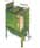 |
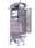 |
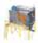 |
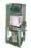 |
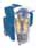 |
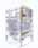 |
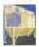 |
|
| Wirkungsweise | Abscheidung von Partikeln am Filtermedium durch Massenkräfte, Sperreffekt, Diffusion, elektrostatische Kräfte, Abscheidevorgang abhängig von Partikelgröße und -konzentration, Agglomerationsverhalten, Lufttemperatur und -feuchte, Anströmgeschwindigkeit und Aufbau des Filtermediums | |||||||
| Partikel werden in Wirrfasermatten oder plissierten Papier- oder Kunstfasern gespeichert, in der Regel nicht regenerierbar | Bildung eines die Filterwirkung unterstützenden Filterkuchens – Regeneration durch zyklische Abreinigung mittels Druckluftimpuls, Gegenspülung oder Vibration | |||||||
| Flexible Filtermedien aus vorwiegend synthetischen Vliesen oder Nadelfilzen als dreidimensionale Tiefenfilter oder als Oberflächenfilter durch Verdichtung, Beschichtung oder Membranen, Schläuche auf Stützkörbe aufgezogen nur vertikal einbaubar, Taschen auf Stützrahmen aufgezogen horizontal oder vertikal einbaubar. | Starre, selbsttragende Filterelemente | |||||||
| aus sternförmig gefalteten Papier- oder Kunstfasern vertikaler Einbau | aus plissierten, thermofixierten Kunstfasern, auch mit Membrane, horizontal oder vertikal | aus gesinterten Kunststoffen, meist mit PTFE-Beschichtung oder aus Keramiksinter, horizontal oder vertikal | ||||||
| Einsatzgebiete Bemerkungen | Zu-, Ab- und Umluftfilter in der Raumlufttechnik, Farb- und Ölnebel- abscheidung, Sekundärfilter nach Abreinigungsfiltern | Breites Anwendungsgebiet zur Abscheidung vorzugsweise trockener Partikel aus industrieller Abluft und Abgasen, Temperaturbereiche bei Filtermedien aus Kunstfasern bis ca. 260 °C, aus Metall und Keramik bis ca. 800 °C. Geeignete Filtermedien sind auch für feuchte Rohgase, zum Anbacken neigende Stäube oder bei chemischem Angriff verfügbar. |
||||||
| Vorwiegend mittlere bis große Anlagen für alle Anwendungsbereiche und kontinuierlichen Betrieb. | Vorwiegend dezentrale Entstaubungsgeräte für diskontinuierlichen Betrieb | Kleinere bis mittelgroße Anlagen für kontinuierlichen Betrieb, auch für Feinstäube. | ||||||
| Volumenströme | 500 bis 100.000 m³/h | 5.000 bis 500.000 m³/h |
1.000 bis 100.000 m³/h |
10.000 bis 150.000 m³/h |
500 bis 10.000 m³/h |
300 bis 10.000 m³/h |
1.000 bis 100.000 m³/h |
|
| Anströmge- schwindigkeit | Bis ca. 150 m/min | 1,0 bis 3,5 m/min | 0,5 bis 1,5 m/min | 0,5 bis 2,0 m/min | 0,5 bis 1,5/min | |||
| Druckverluste | 100 bis 600 Pa | 600 – 2.000 Pa | 1000 – 2500 Pa | 800 – 2000 Pa | 1500 – 3000 Pa | |||
| Rohgas- konzentration | Bis ca. 0,05 g/m³ | bis ca. 100 g/m³ | bis ca. 50 g/m³ | bis ca. 10 g/m³ | bis ca. 5 g/m³ | bis ca. 20 g/m³ | ||
| Reingas- konzentration | 0,01 – 1 mg/m³ | 1 – 30 mg/m³ | 0,5 – 20 mg/m³ | 5 – 50 mg/m³ | 0,5 – 10 mg/m³ | 0,1 – 10 mg/m³ | ||
| Vorteile | Hohe Abscheidungs- leistung für feinste Stäube möglich | Anpassung an unterschiedlichste Betriebsbedingungen durch große Auswahl verschiedener Filtermedien und sehr effektive Abreinigung, niedrige Reststaubgehalte durch Oberflächenfiltration. | Preiswerte Komplettgeräte mit Ventilator und Staubsammelbehälter, mobile Ausführung möglich | Etwa doppelte Filterfläche gegenüber Taschenfiltern auf gleichem Raum, geringer Verschleiß und lange Standzeiten der Filterelemente, kaum Partikeldurchtritt beim Druckluftimpuls, hohe Abscheidegrade auch bei Feinststäuben, z. B. metallurgische Rauche | ||||
| Großanlagen durch große Schlauch- längen kostengünstig, Vorabscheidung im Bunker bei hohen Staub- konzentrationen | Rohgasführung von oben nach unten kann Staubaustrag unterstützen, wartungsfreundlich durch horizontalen Taschenauszug | Geringe Wieder- und Gegenbeaufschlagung, schonende Off-line- Abreinigung, geringer Verschleiß des Filtermediums, sehr wartungsfreundlich | Bis zu 10-fache Filterfläche gegenüber Schlauchfilter auf gleichem Raum | |||||
| Hohe chemische bzw. Tempera- turbeständigkeit | ||||||||
| Nachteile | Nur bei geringen Rohgaskonzen- trationen einsetzbar; ansteigender Druckverlust während des Betriebes; Standzeit begrenzt (maximal 6 – 12 Monate) | Wegen großer Bauhöhen im Allgemeinen nicht für Innenaufstellung | Taschengröße für Großanlagen begrenzt | Für kleiner Anlagen hoher Investitionsaufwand, verfügbare Filterfläche durch Spülwagen reduziert | Abreinigung nur diskontinuierlich, hoher Verschleiß und Staubdurchtritt beim Abrütteln | Hohe Strömungsge- schwindigkeiten, mögliches Zusetzen bei enger Sternfaltung | Geringere Filter- flächenbelastung gegenüber Taschenfiltern realisierbar | Vergleichsweise hohe Druck- verluste, geringere Filterflächen- belastung realisierbar |
| erhöhter Verschleiß und Partikeldurchtritt beim Druckluftimpuls möglich | Nur für trockene und freifließende Stäube bei geringer Filterflächenbelastung | |||||||
Tabelle 1: Bauarten und typische Kenndaten filternder Abscheider
Massenkraftabscheider, wie Zyklone, Prallabscheider und Absetzkammern, beruhen auf der Abscheidung durch reine Massenkräfte, wie Gravitation und Zentrifugalkräfte (siehe Tabelle 2).
Ihr Vorteil liegt im einfachen Aufbau, geringem Platzbedarf, den niedrigen Investitionskosten und dem wartungsfreien und kostengünstigen Betrieb bei gleichzeitig geringen Druckverlusten (typisch unter 800 Pa, Hochleistungszyklon bis 1500 Pa).
Aus dem Abscheideprinzip ergibt sich aber die ausgeprägte Abhängigkeit des Abscheidegrades von der Masse der abzuscheidenden Partikel. Sie finden deshalb in der Regel nur für grobe Partikel, z. B. Holzspäne, Papierschnitzel, bei sehr geringen Anforderungen an den Abscheidegrad oder als Vorabscheider für nachgeschaltete Hochleistungsabscheider Verwendung.
In elektrischen Abscheidern werden abzuscheidende Staubpartikel oder Nebeltröpfchen aufgeladen, quer zur Gasströmung von einer entgegengesetzt gepolten Niederschlagselektrode (Kollektor) angezogen und dort abgeschieden. Die Aufladung erfolgt dabei durch Sprühentladung (Corona-Effekt) von drahtförmigen Elektroden (Ionisator), die unter 10 bis 80 kV Gleichspannung stehen.
Eine gleich bleibend wirksame Abscheidung ist nur bei regelmäßiger Reinigung der Kollektorflächen und Elektroden gewährleistet, da Ablagerungen durch Schwächung des elektrostatischen Feldes den Abscheidegrad kontinuierlich verschlechtern. Nach der Art der zu reinigenden Gase können Nasselektrofilter mit Abreinigung durch einen herabrieselnden Wasserfilm oder Trockenelektrofilter mit periodischer Abreinigung mittels Rütteleinrichtung unterschieden werden (siehe Tabelle 2).
Unter günstigen Bedingungen können Abscheidegrade von maximal 90 bis 98 % erreicht werden. Vorteilhaft sind der nahezu vernachlässigbar geringe Druckverlust (typisch unter 400 Pa einschließlich erforderlichem Grob- Vorfilter) und die grundsätzliche Eignung für nasse und trockene Rohgase.
Elektrofilter für große Volumenströme sind besonders verbreitet in der Heißgasentstaubung und der Rauchgasreinigung für Verbrennungsanlagen, jedoch mit abnehmender Tendenz zugunsten Filternder Abscheider. Kleine bis mittlere Anlagen sind in der Metall verarbeitenden Industrie zur Schweißrauch- und Ölnebelabscheidung verbreitet. Diese haben aus Kostengründen meist keine Abreinigungseinrichtung, erfordern deshalb kurze Wartungszyklen und wegen der schwankenden Abscheideleistung bei Reinluftrückführung im Regelfall einen Nachfilter. Insbesondere bei der Abscheidung von Kühlschmierstoffen ist zu beachten, dass lediglich der Aerosolanteil, jedoch keineswegs der Dampfanteil abgeschieden werden kann.
Ungeeignet sind Elektrofilter bei hohen Partikelkonzentrationen, sehr hohem spezifischen Widerstand des Staubes sowie beim Vorkommen von brennbaren Stäuben und Gasen.
In Nassabscheidern werden Staubpartikel durch eine Flüssigkeit – in der Regel Wasser – aufgenommen, die in der Abscheidezone als Tröpfchenschleier oder als Film vorliegt. Für eine gute Abscheidung ist ein hoher Auftreffgrad anzustreben, so dass in der Regel ein hoher Abscheidegrad bei einer gegebenen Staubart nur bei hohem Druckverlust erreichbar ist (siehe Tabelle 2).
Niederdruck-Nassentstauber (z. B. Wirbelwäscher) arbeiten mit Druckverlusten bis etwa 3 000 Pa, können jedoch nur geringe Anforderungen an den Abscheidegrad, z. B. zwischen 60 und maximal 90 %, erfüllen.
Dagegen lassen sich mit Hochdruck-Nassentstaubern auch Abscheidegrade über 90 % erzielen, die aber mit Druckverlusten bis zu 20 000 Pa, z. B. Venturi-Nassabscheider, erkauft werden müssen.
Als typische Nachteile von Nassabscheidern gelten neben den hohen Energiekosten der Wasserverbrauch, die Kosten für Aufbereitung der verbrauchten Waschflüssigkeit bzw. Schlammentsorgung und der Verschleiß schlammberührter Bauteile. Vorteilhaft sind die Unempfindlichkeit gegenüber nassen Rohgasen und Stäuben, der sehr gute Brand- und Explosionsschutz und die grundsätzliche Möglichkeit, die Staubabscheidung mit einer gleichzeitigen Schadgasabsorption zu verbinden.
Nassabscheider werden eingesetzt
| Bezeichnung | Massenkraftabscheider | Elektrische Abscheider | Nassarbeitende Abscheider | |||
| Bauformen | Schwerkraft/Umlenk-Abscheider | Fliehkraft-Abscheider (Zyklon) | Trocken- elektrofilter | Nasselektrofilter | Wirbelwäscher | Venturiwäscher |
| Systembild (Beispiele) | 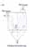 |
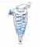 |
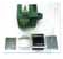 |
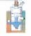 |
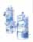 |
|
| Wirkungsweise | Abscheidung von festen oder flüssigen Partikeln | Aufladung von festen oder flüssigen Partikeln in einem elektrischen Feld und Abscheidung auf Niederschlagselektroden. Abscheidegrad stark abhängig von speziellem Staubwiderstand, Partikelkonzentration und Geschwindigkeit. Abreinigung der Niederschlagsplatten durch: | Bindung der Partikel an in den Gasstrom eingebrachten Flüssigkeitsschleier oder -film | |||
| durch Schwer- und Trägheits- kräfte | durch Flieh- kräfte aus einer rotierenden Strömung | Klopf- oder Rüttel- einrichtungen bei Großfiltern oder im ausgebauten Zustand bei kleinen Baueinheiten | Abspülung mit herabrieselndem Wasserfilm | Umlenkung der partikelbeladenen Luft und der Flüssigkeit durch feste oder rotierende Einbauten | Bildung eines homogenen Tropfenschleiers durch Einspeisung in eine Venturidüse | |
| Abscheidegrad vor allem abhängig von der Partikelmasse und -geschwindigkeit | Anschließende Abscheidung der Tröpfchen durch Massenkraftabscheider | |||||
| Einsatzgebiete Bemerkungen | In allen Industriebereichen für grobe Partikel, bei geringen Anforderungen an den Abscheidegrad als Vorabscheider oder Funkenfänger für nachgeschaltete filternde Abscheider | In nahezu allen Industriebereichen, Zement-, Stahl- und chemische Industrie, Rauchgasentstaubung, Feuerungsanlagen, Ölnebel- und Schweißrauchabscheidung in der Metallindustrie | Vorzugsweise in der Chemie- und Metallindustrie für feuchte Abluftströme, explosive Staub-Luftgemische, klebrige und stark hygroskopische Stäube | |||
| bei höheren Temperaturen bis ca. 500 °C | bei feuchtem Abgas, Aerosolen und klebrigen Stäuben | Trenngrenze 1 bis 3 μm |
Trenngrenze 0,1 μm |
|||
| Volumenstrom | 500 bis 100.000 m³/h | 500 bis 500.000 m³/h | 800 bis 50.000 m³/h | |||
| Druckverluste | 300 – 600 Pa | 500 – 1.500 Pa | 200 – 500 Pa | 400 – 800 Pa | 1.500 – 3.000 Pa | 3.000 – 20.000 Pa |
| Rohgas- konzentration | nicht beschränkt | bis ca. 50 g/m³ | nicht beschränkt | |||
| Reingas- konzentration | 50 – 500 mg/m³ | 1 – 150 mg/m³ | 20 – 200 mg/m³ | 3 – 50 mg/m³ | ||
| Abscheidegrad | 50 – 90 % | 90 – 98 % | 80 – 90 % | 90 – 95 % | ||
| Vorteile | Einfach, robust, kostengünstig; geringer Druckverlust, unempfindlich gegen Druck und Temperatur (bis 1000 °C) | Hohe Abscheideleistung für Feinstäube und Aerosole möglich, sehr geringer Druckverlust, im Allgemeinen geringe Betriebskosten | Unempfindlich gegen Feuchtigkeit, sehr guter Brand- und Explosionsschutz, gleichzeitige Gaskühlung oder Schadgasabsorption möglich | |||
| Nachteile | Geringe Abscheideleistung, für Feinstäube ungeeignet | Begrenzte Rohgaskonzentration, großer Platzbedarf, hoher Investitionsaufwand | Wasser-/Schlammaufbereitung bzw. -entsorgung erforderlich, hohe Energiekosten | |||
| Hoher Reinigungs- aufwand bei kleinen Baueinheiten | Wasser-/Schlamm- aufbereitung bzw. -entsorgung erforderlich | Geringe Abscheideleistung für Feinstäube | Hohe Abscheideleistung nur bei sehr hohem Druckverlust | |||
Tabelle 2: Bauarten und typische Kenndaten von Massenkraftabscheidern, elektrischen und nassarbeitenden Abscheidern